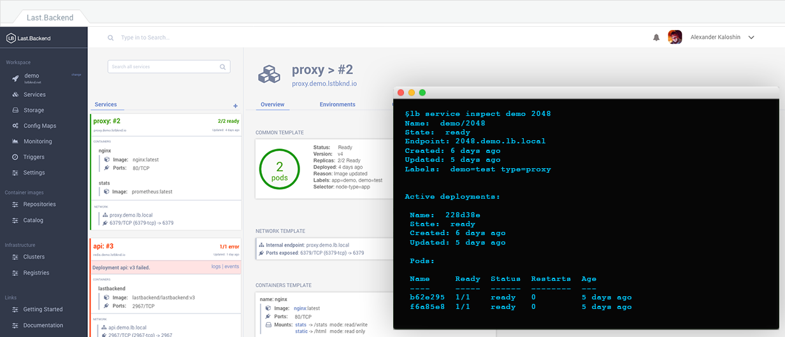
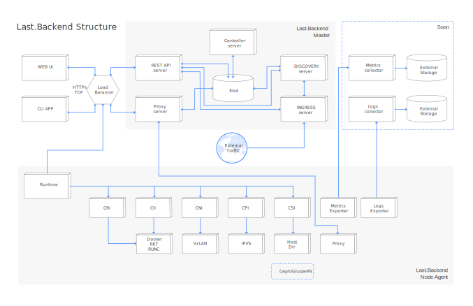

This reference for version: latest

Last.Backend: open source platform for containerized apps management across cluster of nodes: deploy, manage, scale
Source code available at lastbackend/lastbackend GitHub repository.
1. Overview
Last.Backend is an open source platform for containerized application management on all stages: from deploy to scale. This solution is based on container technology and fully support docker containers type.
Note that project is under active development and our team is working day and night to make it better. Your suggestions, comments and contributions is very helpful. Big thanks for that!
2. Design principles
Our design principles allows us to create extendable and powerful system. We separated runtime into particular package and used interfaces to add ability to extend supported technologies. By default Last.Backend operate with these runtimes: - CRI - container runtime interface: docker by default - CII - container image interface: docker by default - CSI - container storage interface: host directory by default - CNI - container network interface: vxlan by default - CPI - container proxy interface: IPVS by default
All these runtimes are documented in runtime section. where all methods, types and algorythms are described.
3. Endpoint interface
The main endpoint to manage cluster is REST API interface.
Our team use swagger for generation API documentation. To create swagger spec, just execute ` make swagger-spec` command in root of repository.
You can use REST API in these options:
-
directly with CURL or another apps
-
using Last.Backend CLI located in separate repo lastbackend/cli[https://github.com/lastbackend/cli]
-
for building custom go apps - you can use golang client located in
pgk/api/clientpackage
4. Current state
Current version is very close for public beta and include: - cluster management - node management - overlay network based on vxlan - internal endpoints for pods balancing based on IPVS - ingress server based on haproxy - internal discovery server - services management with basic blue/green deployments - volumes management
All of these functionalities is under active tests now, so don’t be surprised by frequent PR please. == Getting Started

4.1. Ready to go environment
Ready-to-go environment will be soon available on cloud.lastbackend.com[cloud.lastbackend.com] control panel for your experiments. In our control plane you can create new cluster, or connect existing cluster.
There are several types of management for cluster connected to clontrol panel: - WEB UI - CLI
Using this panel you can manage multiple clusters located on defferent hosting providers from single point.
4.2. Provision personal cluster
There are many options how you can get local last.backend cluster. The most popular are described here:
-
local version with docker-machine You can easilly create local environment with docker-machine. You can create local cluster contains 1 node or multiple nodes, with full fuctional support. This is a good point to start testing, or start contributing.
-
hosted version, provisioned with ansible Our team prepared ansible roles for deploy last.backend cluster on your favourite environment. Ansible roles located at separated repository lastbackend/ansible[https://github.com/lastbackend/ansible]
4.3. Development environment
4.3.1. Prerequisites
-
Go 1.7 or higher
-
Go docker client v17.03
-
Go etcd client for v3
-
Git
For creating local development environment we suggest you to use docker-machine provision type:
$ go get github.com/lastbackend/lastbackend
$ cd ${GOPATH:-~/go}/src/github.com/lastbackend/lastbackend
$ make deps && make build && make install4.4. Create local development environment
use docker-machine to create nodes for cluster
# set sources path
export LB_SOURCES_PATH=/opt/src/github.com/lastbackend/lastbackend
cd ${LB_SOURCES_PATH}
make deps
# create master node
docker-machine create --driver virtualbox master
docker-machine stop master
# note: for virtulabox driver we can mount host dir into docker-machine with this command
VBoxManage sharedfolder add master --name /lastbackend --hostpath $LB_SOURCES_PATH --automount
docker-machine start master
# create minion nodes
docker-machine create --driver virtualbox minion-00
docker-machine stop minion-00
VBoxManage sharedfolder add minion-00 --name /lastbackend --hostpath $LB_SOURCES_PATH --automount
docker-machine start minion-00
# run etcd on master machine
eval (docker-machine env master)
make image
export MASTER_IP=$(docker-machine ip master)
docker run -d -p 4001:4001 -p 2380:2380 -p 2379:2379 \
--name etcd quay.io/coreos/etcd:v3.2.9 /usr/local/bin/etcd \
-name etcd0 \
-advertise-client-urls http://${MASTER_IP}:2379,http://${MASTER_IP}:4001 \
-listen-client-urls http://0.0.0.0:2379,http://0.0.0.0:4001 \
-initial-advertise-peer-urls http://${MASTER_IP}:2380 \
-listen-peer-urls http://0.0.0.0:2380 \
-initial-cluster-token etcd-cluster-1 \
-initial-cluster etcd0=http://${MASTER_IP}:2380 \
-initial-cluster-state new
# fetch deps
docker run --rm -it \
-v /lastbackend:/go/src/github.com/lastbackend/lastbackend \
-w /go/src/github.com/lastbackend/lastbackend \
--name=deps \
--net=host \
golang ./hack/bootstrap.sh
# run Last.Backend Cluster API from sources in docker
docker run -d -it --restart=always \
-v /lastbackend:/go/src/github.com/lastbackend/lastbackend \
-v /lastbackend/contrib/config.yml:/etc/lastbackend/config.yml \
-w /go/src/github.com/lastbackend/lastbackend \
--name=api \
--net=host \
lastbackend/lastbackend go run ./cmd/kit/kit.go api -c /etc/lastbackend/config.yml
# run Last.Backend Cluster CTL from sources in docker
docker run -d -it --restart=always \
-v /lastbackend:/go/src/github.com/lastbackend/lastbackend \
-v /lastbackend/contrib/config.yml:/etc/lastbackend/config.yml \
-w /go/src/github.com/lastbackend/lastbackend \
--name=ctl \
lastbackend/lastbackend go run ./cmd/kit/kit.go ctl -c /etc/lastbackend/config.yml
# run Last.Backend Cluster Discovery from sources in docker
docker run -d -it --restart=always \
-v /lastbackend:/go/src/github.com/lastbackend/lastbackend \
-v /lastbackend/contrib/discovery.yml:/etc/lastbackend/config.yml \
-w /go/src/github.com/lastbackend/lastbackend \
--net=host \
--name=discovery \
lastbackend/discovery go run ./cmd/discovery/discovery.go ctl -c /etc/lastbackend/config.yml
# run Last.Backend Cluster Ingress from sources in docker
docker run -d -it --restart=always \
-v /lastbackend:/go/src/github.com/lastbackend/lastbackend \
-v /lastbackend/contrib/ingress.yml:/etc/lastbackend/config.yml \
-w /go/src/github.com/lastbackend/lastbackend \
--net=host \
--name=ingress \
lastbackend/ingress go run ./cmd/ingress/ingress.go ctl -c /etc/lastbackend/config.yml
# run node on minion host
# create minion node
docker-machine create --driver virtualbox minion-00
docker-machine stop minion-00
VBoxManage sharedfolder add minion-00 --name /lastbackend --hostpath $LB_SOURCES_PATH --automount
docker-machine start minion-00
# enable modprobe ip_vs for internal load balancing
# this is required for boot2docker iso image
docker-machine ssh minion-00 "sudo modprobe ip_vs"
eval (docker-machine env minion-00)
make image
# install deps for sources
docker run --rm -it \
-v /lastbackend:/go/src/github.com/lastbackend/lastbackend \
-w /go/src/github.com/lastbackend/lastbackend \
--name=deps \
--net=host \
golang ./hack/bootstrap.sh
# run node container
docker run -d -it --restart=always \
-v /lastbackend:/go/src/github.com/lastbackend/lastbackend \
-v /lastbackend/contrib/node.yml:/etc/lastbackend/config.yml \
-v /var/run/docker.sock:/var/run/docker.sock \
-v /var/run/lastbackend:/var/run/lastbackend \
-v /lib/modules:/lib/modules:rw \
-w /go/src/github.com/lastbackend/lastbackend \
-e LB_API_URI="$MASTER_IP:2967" \
-e LB_DNS_IPS="$MASTER_IP" \
--privileged \
--name=node \
--net=host \
index.lstbknd.net/lastbackend/lastbackend go run ./cmd/node/node.go -c /etc/lastbackend/config.yml
# check logs
docker logs -f node4.4.1. Last.Backend installation
In this section you can find the best solution for setup Last.Backend cluster.
You can run Last.Backend cluster almost anywhere. You can start from your laptop or VMs on a cloud provider. Your decision should be based on available resources and infrastructure design requirements.
Our team prepared a common types of installation:
Local Installation
A local installation is an easy way to get started. You can create and test Last.Backend clusters in a few minutes on your laptop using docker-machine for example.
Use this type of installation if you want to: - Try and test cluster - Develop and contributing
Here you can learn how to deploy Last.Backend cluster with docker-machine.
Sefl Hosted Installation
Self Hosted installation is a good way to create and maintain your own Last.Backend cluster for teams and companies
Use this type of installation if you want to: - Get a company/team cluster on your infrastructure - Focus on apps development speed without worrying for delivery process.
Here you can learn how to deploy Last.Backend cluster with ansible.
Last.Backend Hosted Installation
Last.Backend Hosted installation is the best way to create and maintain Last.Backend cluster for teams and companies in one click On this type of installation, you will get Last.Backend cluster, managed by Last.Backend team.
Use this type of installation if you want to: - Get a company/team cluster on your infrastructure - Focus on apps development speed without worrying for delivery process. - Have high availability cluster, managed by Last.Backend team
You can request for your dedicated cluster on control panel(soon) or by email: request@lastbackend.com
Provider Hosted Installation
Provider Hosted installation is a convenient way to create and maintain Last.Backend cluster for teams and companies in one click
Use this type of installation if you want to: - Get a company/team cluster on your infrastructure - Focus on apps development speed without worrying for delivery process. - Have high availability cluster, managed by providers
Now we are in integration stage with a lot of different hosting providers across the globe. For more information you can contact us: partners@lastbackend.com ==== Last.Backend platform design
The Design section described the parts of the Last.Backend platform and the abstractions to helps you obtain a deeper understanding of how it works.
Overview
Last.Backend platform is a set of processes of 2 types: master processes and minion processes. Master processes operates with cluster state, non-master applying state on physical machines. In the core of design principles of Last.Backend there are runtime objects(manifests). Using manifest, you can change Last.Backend cluster state. Manifests can be 2 types: - external - to pass changes into cluster - internal - intercommunication system manifests
Manifests
There is only 1 endpoint to handle manifests - the REST API. Manifests can be several types: - Namespace manifest - Service manifest - Secret manifest - Config manifest - Route manifest
In the internal communication process Last.Backend also uses manifests:
-
Node manifest: - collection of node state manifests:
-
Pod manifests - map of pod manifests, that should be on node
-
Endpoint manifests - map of endpoints manifests, that should be on node
-
Volume Manifests - map of volumes manifests
-
Congig Manifests - map of config manifests
-
Secret Manifests - map of secrets manifests
-
Subnets Manifests - network subnets manifests
-
Resolvers Manifests - cluster resolvers manifests
-
Ingress manifest:
-
Resolvers Manifests - cluster resolvers manifests
-
Endpoint manifests - map of services endpoint manifests
-
Routes manifests - map of routes manifests
More about manifests you can read in particular object section in this docs. For example service manifest is described in Serices section.
Processes
We can separate all Last.Backend processes in to types: - master processes - minion processes
To master process group we can set: REST API, Controller, Discovery and Ingress To minion process group we can set node.
All master process can be horizontally scaled, except controller. It can be also scaled, but master process should be one, others will be set as slaves.
Last.Backend REST API is designed to setup cluster state directly or with command line interface application. The main REST API function is to validate incomming changes, and pass they into database.
Last.Backend Controller is a process that operates for cluster state match. After state is changed, controller start applying changes to make cluster state match. The main design of controlles - is to handle current state, receive new update from database and preform a variety of automated tasks such as creating new deployment, pod, changind replicas, scheduling containers and volumes, and more. Controller handles all cluster state and watches nodes state, handles capacity cluster information and more data. It also performs cluster automated tasks, based on nodes or ingress states. For example it can reschedule pods after not rechanble timeout.
Last.Backend Discovery - is service discovery process, that handles all information on services registrations and internal domain names. In two words it is an internal DNS server for services.
Last.Backend Ingress - is the entry point for external traffics to internal network. It is auto-configured HAproxy server, which proxy traffic by routes rules to internal endpoints.
Last.Backend minion node - is a minion process that perform all operations with containers, volumes and networks on physical machine. Node communicates with REST API. It pull state changes and send current state information about pods, volumes, endpoint, system info and more.
Storage
Last.Backend uses storage package to store information about cluster state.
As main database Last.Backend uses ETCDv3. For more information about storage tree and available methods, you can read design/storage section. Etcd is a distributed key value store that provides a reliable way to store data across a cluster of machines. It’s an open-source and available on GitHub. etcd gracefully handles leader elections during network partitions and will tolerate machine failure, including the leader.
More information about ETCD you can read on the main etcd website: https://coreos.com/etcd/
4.5. Last.Backend Network Design
Last.Backend approaches networking by default installation. There are 3 types of network communications:
-
Container-to-container communications in the pod realized by using one vnet interface by containers in one pod.
-
Pod-to-pod communications realized by endpoint.
-
External-to-Service commutication is realized by endpoints and ingress.
Last.Backend assumes that pods can communicate with other pods, across hosts. Every pod gets its own IP address so you do not need to create links between pods or mapping container ports to host ports. This design provides you clean network model, where pod is like separated host in your cluster.
4.6. Network Runtime
Last.Backend uses 2 network runtime interfaces: - CNI - to perform overlay network operations - CPI - to perform network proxy operations
4.7. CNI
CNI runtime interface operates with network in 5 methods:
Info(ctx context.Context) *types.NetworkState
Create(ctx context.Context, network *types.SubnetManifest) (*types.NetworkState, error)
Destroy(ctx context.Context, network *types.NetworkState) error
Replace(ctx context.Context, state *types.NetworkState, manifest *types.SubnetManifest) (*types.NetworkState, error)
Subnets(ctx context.Context) (map[string]*types.NetworkState, error)Current version of Last.Backend contains VxLAN overlay network implemetation. VxLAN driver automatically creates network interface for communications, creates ARP, FBD rules to reach hosts in network. To enable VxLAN network in cluster, you need to pass runtime.cni type to "xvlan". CNI automatically detect default network interface, but if you need to setup a specific interface in node: just put in the runtime.interface option.
runtime:
interface: "eth1" #external interface to route traffic
cni:
type: "vxlan"4.8. CPI
CPI runtime interface operates with proxy endpoints in 4 methods:
Info(ctx context.Context) (map[string]*types.EndpointState, error)
Create(ctx context.Context, manifest *types.EndpointManifest) (*types.EndpointState, error)
Destroy(ctx context.Context, state *types.EndpointState) error
Update(ctx context.Context, state *types.EndpointState, manifest *types.EndpointManifest) (*types.EndpointState, error)Current version of Last.Backend contains IPVS proxy implemetation. IPVS driver manages IPVS configuration on node, creates new endpoint services and backends IPVS driver automatically creates ipvs dummy network interface for communications, attach cluster IP to it and manage ip routing options. To enable IPVS proxy mode in cluster, you need to pass runtime.cpi type to "ipvs".
CNI automatically detect default network interface, but if you need to setup a specific interface in node: just put in the runtime.interface option.
runtime:
interface: "eth1" #external interface to route traffic
cpi:
type: "ipvs"5. Last.Backend Runtime
This section describes runtime Last.Backend information about core objects, componens and other cool things.
Globally Last.Backend contains in 2 parts: - namespace runtime - infrastructure runtime
5.1. Namespace runtime
Namespace runtime is a virtual state in cluser, contains: - Namespace management - Service management - Deployment management - Pod management - Endpoint management - Secret management - Config management - Volumes management - Routes management
5.1.1. Namespace
Namespace is like a virtual cluster in physical cluster.
Namespaces are designed for create separate isolated group of services. For example you need to use namespace to separate projects or project stages. Each namespace is isolate from others, so you can create namespace usage quotas. All resources in namespace need to be unique within namespace, but not across namespaces.
Namespaces are a way to divide cluster resources between multiple projects (via resource quota). It is not necessary to use multiple namespaces just to separate project version or stages, but you can use it for that.
Working with namespaces
Creation and deletion of namespaces are described in the separated section of documentation for namespaces.
Viewing namespaces You can list the current namespaces in a cluster using:
$ lb namespace ls
NAME DESCRIPTION ENDPOINT
---- ----------- --------
demo demo.lb.localCreate new namespace:
$ lb namespace create test
Namespace `test` is created
NAME test
DESCRIPTION
ENDPOINT test.lb.local5.1.2. Service
Service in Last.Backend is your running app. Service is set of apps deployments, where only one deployment can be in active state. The main idea of services is to create one specification of your app with all needed information, such as container images, network settings, volumes binding and other.
Services can be 2 types: - stateless - services that not handle working state information, - statefull - services that handle working state
Stateless services
Stateless services are the common type of services you need to use in your microservices architecture. This type of services can be easilly replicated across the cluster of nodes.
Statefull services
Stateless services are the common type of services you need to use in you need to run database or similar application. This type of services in Last.Backend workflow should be hard binded to particular node, and should not be scale horizontally. But you can always migrate service from one node to another with all data.
Working with services
Creation and deletion of services are fully described in the separated section of documentation for services.
Viewing services in namespace
You can list the current service in a namespace using:
$ lb service ls <namespace name>For example:
$ lb service ls demo
NAME ENDPOINT STATUS REPLICAS
---- -------- ------ --------
2048 2048.demo.lb.local ready
proxy proxy.demo.lb.local readyCreate new service:
The convinient way is to create service from manifest file like:
kind: Service
version: v1
meta:
name: 2048
labels:
type: proxy
demo: test
spec:
selector:
node:
labels:
type: "example"
replicas: 2
network:
ports: ["80:80/tcp"]
template:
containers:
- name: nginx
image:
name: evilroot/docker-2048$ lb namespace apply demo -f <path to service manifest>
Service `2048` is createdInspect service:
You can view information about service with inspect command:
$lb service inspect <namespace name> <service name>$lb service inspect demo 2048
Name: demo/2048
State: ready
Endpoint: 2048.demo.lb.local
Created: 6 days ago
Updated: 5 days ago
Labels: demo=test type=proxy
Active deployments:
Name: 228d38e
State: ready
Created: 6 days ago
Updated: 5 days ago
Pods:
Name Ready Status Restarts Age
---- ----- ------ -------- ---
b62e295 1/1 ready 0 5 days ago
f6a85e8 1/1 ready 0 5 days agoHere you can see active deployment, pods, endpoint and other helpful information about service.
Update service:
The convinient way to update service is to set new service manifest file:
kind: Service
version: v1
meta:
name: 2048
labels:
type: proxy
demo: test
spec:
selector:
node:
labels:
type: "example"
replicas: 1
network:
ports: ["80:80/tcp"]
template:
containers:
- name: nginx
image:
name: evilroot/docker-2048$ lb namespace apply demo -f <path to service manifest>
Service `2048` is updatedLast.Backend platform creates diff of current service spec and provided. It automatically creates new deployment, when container runtime information is changed.
5.1.3. Deployment
As described above, service can handle multiple deployments. Deployment is a service configuration, containes all information about how service should be run, scaled and other.
Deployment can be in several type of states: - Created - Provision - Ready - Error - Degradation - Destroy - Destroyed
When service configuration is changed, Last.Backend controller should make a decision about new deployment service should be created or not. It depends on which spec params changes.
Deployments can not be created, updated or deleted manually - they a fully managed by controller. You can only view current deployments state in service. For more information about deployments and manifest specification, go to separated services deployments section in documentation.
5.1.4. Pod
Pod is a minimal scalable entity in Last.Backend cluster. It can contain one container, or multiple containers with shared resources. Pod specification is describe all rules, how host shuld create, start and manage containers.
Pod can be in several type of states: - Created - Provision - Ready - Error - Degradation - Destroy - Destroyed
Pods can not be created, updated or deleted manually - they are fully managed by controller. You can only view current pods state in service deployment. For more information about pods and manifest specification, go to separated deployment pods section in documentation
5.1.5. Endpoint
Endpoint is an internal entrypoint for service. If you need to access service in the cluster, you need to create portMap with proxy rules. Each endpoint receives internal cluster IP, and internal domain name in from of <service name>.<namespace name>.lb.local.
Create endpoint
Endpoints are managed automatically by controller and depends on service specification. That means that you can have service without endpoint, and it will not be accessible in a cluster network.
kind: Service
version: v1
meta:
name: 2048
labels:
type: proxy
demo: test
spec:
selector:
node:
labels:
type: "example"
replicas: 1
network:
ports: ["80:8080/tcp"]
template:
containers:
- name: nginx
image:
name: evilroot/docker-2048In an example above we open service 2048 to cluster service-2-service communication by passing network.ports option to ["80:8080/tcp"].
In this line we allow access to service by 80 port, and proxy traffic to 8080 port on pod. And you can access your service from other services by 2048.demo.lb.local:80 endpoint.
5.1.6. Volumes
Volume is a storage for your services data. When new volume is placed in cluster state, node agent creates a directory on host. This directory is mounted to containers according mount rules, specified in service sepcification.
5.1.7. Secret
Secret is designed to store sensitive information. You can deside yourself, what type of information is sensitive, but in common it is passwords, tokens, ssh keys. If you need to use secrets, you should attach it in to pod. There is 2 options how you can do it: - attach secret to pod as file placed in volume - attach secret data to pod environment
Secret contains map of key=value, so you can store in one secret multiple key=values pairs or files.
Create secret
You can create secret in few types: - auth - secret type designed to store Username and Password.
$lb secret create <namespace name> <name> -a -u <username> -p <password>-
text - secret type designed to store key=value info.
$lb secret create <namespace name> <name> -t <key>=<value> -t <key2>=<value2>
-
file - secret type designed to store sensitive files, like ssh-keys
$lb secret create <namespace name> <name> -f <file path>
Attach secret to service as environment variable
To attach secret to environment variable in service, you need modify service container spec and set env.secret.name to select secret and env.secret.key to select secret key value of should be used.
kind: Service
version: v1
meta:
name: 2048
labels:
type: proxy
demo: test
spec:
selector:
node:
labels:
type: "example"
replicas: 1
network:
ports: ["80:8080/tcp"]
template:
containers:
- name: nginx
image:
name: evilroot/docker-2048
env:
- name: <env name>
secret:
name: <secret name>
key: <secret key>Attach secret to service as file in volume
To attach secret to service as file in volume, you need modify service volume spec and set secret.name to select secret and secret.files to select secret key value of should be used.
kind: Service
version: v1
meta:
name: 2048
labels:
type: proxy
demo: test
spec:
selector:
node:
labels:
type: "example"
replicas: 1
network:
ports: ["80:8080/tcp"]
template:
containers:
- name: nginx
image:
name: evilroot/docker-2048
volume:
- name: <volume name>
path: <mount path>
volumes:
- name: <volume name>
secret:
name: <secret name>
files: [<secret key>]Update secret
You can update secret by changing data but not secret type:
$lb secret update <namespace name> <name of auth secret> -a -u <username> -p <password>
$lb secret update <namespace name> <name of text secret> -t <key>=<value> -t <key2>=<value2>
$lb secret update <namespace name> <name of file secret> -f <file path> -f <file2 path>5.1.8. Config
Configs is designed to store configuration information for your sercices. If you need to use configs, you should attach it in to pod. There is 2 options how you can do it: - attach config to pod as file placed in volume - attach config value to pod environment
Create config
You can create config of 2 types:
-
text - config type designed to store key=value info.
$lb config create <namespace name> <name> -t <key>=<value> -t <key2>=<value2>
-
file - config type designed to store config files, like config.yaml
$lb config create <namespace name> <name> -f <file path> -f <file path>
You can create config providing config manifest and apply it into namespace:
$lb namespace apply <namespace name> -f <config manifest file>Exmaple of config manifest:
kind: Config
version: v1
meta:
name: lastbackend
spec:
type: file
data:
- key: config.yml
file: ./contrib/config.ymlAttach config to service as environment variable
To attach config to environment variable in service, you need modify service container spec and set env.config.name to select config and env.config.key to select config key value of should be used.
kind: Service
version: v1
meta:
name: 2048
labels:
type: proxy
demo: test
spec:
selector:
node:
labels:
type: "example"
replicas: 1
network:
ports: ["80:8080/tcp"]
template:
containers:
- name: nginx
image:
name: evilroot/docker-2048
env:
- name: <env name>
config:
name: <config name>
key: <config key>Attach config to service as file in volume
To attach config to service as file in volume, you need modify service volume spec and set config.name to select config and config.files to select config files which should be placed in volume.
kind: Service
version: v1
meta:
name: 2048
labels:
type: proxy
demo: test
spec:
selector:
node:
labels:
type: "example"
replicas: 1
network:
ports: ["80:8080/tcp"]
template:
containers:
- name: nginx
image:
name: evilroot/docker-2048
volume:
- name: <volume name>
path: <mount path>
volumes:
- name: <volume name>
config:
name: <config name>
files: [<config key>]5.1.9. Routes
Routes are designed to pass external traffic into cluster network. Route is a set of rules contains: - Domain - DNS record of route - Port - external port to listen - Rules: Set of rules for proxy: - Path to handle - Service service name to proxy - Service endpoint port to proxy
Get routes
To receive routes list in namespace use:
$lb route ls <namespace name>$lb route ls demo
NAMESPACE NAME DOMAIN HTTPS STATUS
--------- ---- ------ ----- ------
demo 2048 2048.demo.lstbknd.io initialized
demo tank tank.demo.lstbknd.io initializedInspect route info
To get route information use:
$lb route inspect <namespace name> <route name>$lb route inspect demo 2048
NAME 2048
NAMESPACE demo
DOMAIN 2048.demo.lstbknd.io
PORT 80
STATUS initialized
PATH SERVICE ENDPOINT PORT
---- ------- -------- ----
/ 2048 2048.demo.lb.local 80Create route
To create route you should provide domain and set of rules where ingress should proxy traffic
$lb route create <namespace name> <route name> -p <route port> <service name>:<service port>For example:
$lb route create demo test -p 443 2048:80
PORT 443
STATUS initialized
NAME test
NAMESPACE demo
DOMAIN test.demo.lstbknd.io
PATH SERVICE ENDPOINT PORT
---- ------- -------- ----
2048 2048.demo.lb.local 80Update route
You can anytime update your route, just passing new rules:
$lb route update <namespace name> <route name> -p <route port> <service name>:<service port>For example:
$lb route update demo test -p 80 tank:80
PORT tank
STATUS initialized
NAME test
NAMESPACE demo
DOMAIN test.demo.lstbknd.io
PATH SERVICE ENDPOINT PORT
---- ------- -------- ----
tank tank.demo.lb.local 805.1.10. Cluster runtime
Cluster runtime is physical resources runtime, contains: - Cluster management - Node management - Discovery management - Ingress management == Last.Backend Storage
Default work-flow
.Info - returns object runtime info .Get - returns object information from storage .List - returns List of Objects .Map - returns Map of objects, where key is object selflink .Put - puts new object into storage .Set - updates object in storage .Del - deletes object from storage .Watch - watches for object changes. Can watch collection, or set of collections if parent. .Key - returns key created interface for selflink generation .Collection - returns all collections available to perform operations .Filter - returns all available filters
5.2. Mock
Mock driver is designed to perform tests without database usage. It is in-memory database with all implemeted methods.
5.3. ETCD v3
This version of Last.Backend uses ETCDv3 as default.
5.3.1. storage tree
/lastbackend
namespace:
/lastbackend/namespace/<namespace selflink>: <namespace object>
service:
/lastbackend/service/<service selflink>: <service object>
endpoint:
/lastbackend/endpoint/<endpoint selflink>: <endpoint object>
deployment:
/lastbackend/deployment/<deployment selflink>: <deployment object>
pod:
/lastbackend/pod/<pod selflink>: <pod object>
volume:
/lastbackend/volume/<volume selflink>: <volume object>
secret:
/lastbackend/secret/<secret selflink>: <secret object>
config:
/lastbackend/config/<config selflink>: <config object>
route:
/lastbackend/route/<route selflink>: <route object>
discovery:
/lastbackend/discovery/<discovery selflink>/info: <discovery object>
/lastbackend/discovery/<discovery selflink>/status: <discovery status object>
ingress:
/lastbackend/ingress/<ingress selflink>/info: <ingress object>
/lastbackend/ingress/<ingress selflink>/status: <ingress status object>
cluster:
/lastbackend/cluster/info: <cluster object>
subnets:
/lastbackend/subnet/<subnet cidr>: <subnet object>
manifests:
/lastbackend/manifests/cluster/endpoint/<endpoint selflink>: <endpoint manifest object>
/lastbackend/manifests/cluster/subnet/<subnet cidr>: <subnet manifest object>
/lastbackend/manifest/node/<node selflink>/pod/<pod selflink>: <pod manifest object>
/lastbackend/manifest/node/<node selflink>/volume/<volume selflink>: <volume manifest object>
subnets:
/lastbackend/cluster/s/<node hostname>/meta: <subnet meta object>
/lastbackend/cluster/snet/<node hostname>/spec: <subnet spec object>
nodes:
/lastbackend/cluster/node/<node selflink>/info: <node object>
/lastbackend/cluster/node/<node hostname>/status: <node status object>
system:
/lastbackend/system
/lastbackend/system/ipam: <IPAM state>
/lastbackend/system/controller/<controller selflink>: <controller object>
/lastbackend/system/controller/<controller selflink>:lead: <controller lead state>6. Contributing
6.1. How to Contribute
The Last.Backend project is Apache 2.0 licensed and accepts contributions via GitHub pull requests. This document outlines some of the conventions on commit message formatting, contact points for developers and other resources to make getting your contribution accepted.
6.1.1. How to contribute to open source on GitHub
Please, read the contributing to open source, before contributing.
6.1.3. Coding Style
-
All code should be formatted with
gofmt -
All code should follow the guidelines covered in Effective Go and Go Code Review Comments.
-
Comment the code. Tell us the why, the history and the context.
-
Variable name length should not be too long.
Great materials to read:
Great tools to use:
6.2. The Roadmap
The Last.Backend project roadmap lives in github project.
6.3. Support
While there are many different channels that you can use to get hold of us (Issues, Forums/Mailing lists), you can help to make sure that we are efficient in getting you the help that you need.
Before opening a new issue, it’s helpful to search the project - it’s likely that another user has already reported the issue you’re facing, or it’s a known issue that we’re already aware of.
If you need support, start with the troubleshooting guide and work your way through the process that we’ve outlined.
That said, if you have questions, reach out to us one way or another. We don’t bite!
6.4. Documentation
Locally can be generated with:
$ docker run --rm -v `pwd`/docs/:/documents/ \
asciidoctor/docker-asciidoctor \
asciidoctor -D /documents/output/ index.adoc|
If you have any questions about the Last.Backend usage or want to share some information with the Last.Backend community, please go to one of the following places: |
Appendix A: License
This project is licensed using the Apache License Version 2.0. For the full project license, see the LICENSE file.